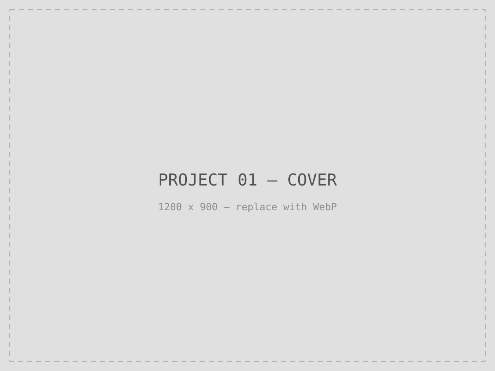

Detailed UI masked per NDA. Process artifacts and metrics shared with permission.
Context
Wipfli Hub is the firm's unified client-and-associate portal for finance and compliance work. As the product grew, so did visual drift: every squad shipped its own buttons, spacing, and states, and design-to-development handoffs relied on screenshots and goodwill rather than a shared source of truth.
Problem
Three symptoms kept recurring: inconsistent components across sections, slow handoffs because developers rebuilt what already existed elsewhere, and accessibility fixes that didn't propagate because there was no single place to fix them. Anything built to solve this had to hold up across products with different teams, timelines, and — eventually — an AI tool reading the same source.

Process
I started with an inventory of every component in production, then designed a token architecture with three tiers: Primitives (raw values — e.g. tg-700 at #3D4A64, blue-500 at #004DFF), Semantic tokens that name a role rather than a value (text/body, action/primary), and Component tokens that consume semantic tokens only (button/label, button/bg-default). Components never reference primitives directly — that's what lets the system re-theme without touching a single component.
The color system itself uses a tinted grey rather than a neutral one, for perceptual warmth that sits coherently with the blue accent palette, built on OKLCH for perceptual uniformity, a better dark-mode gamut, and Tailwind v4 compatibility. Six semantic intents — Info, Success, Critical, Warning, Neutral, and AI — each map to a specific hue, and a surface-layering model (surface/base → layer-1 → layer-2) creates elevation through shadow rather than darkening, so light and dark mode share the same token names with different values and zero component rewrites.
Tokens ship through a Style Dictionary pipeline: one platform-agnostic source emits CSS custom properties, a Tailwind @theme block, and JSON, in two build passes. Before Blueprint, the same intent existed as 47 hardcoded hex values spread across 3 files; after, it's one source of truth. Components themselves are built as CVA (class-variance-authority) variants — the Button component alone covers primary/secondary/ghost/destructive variants, a full interaction-state set, a size scale, icon support, and ARIA/keyboard/focus-ring accessibility built in rather than bolted on per instance.
Solution
Blueprint shipped as three connected artifacts: the Figma component kit (built with Variables, Auto Layout, and Dev Mode), the usage documentation, and the linked component code. Code Connect ties each Figma component to its code counterpart, so Dev Mode shows the real, current implementation rather than an approximation — and the same links later gave an LLM a precise, structured target to build against (see the AI-generated frontend POC).
Outcome
Adopted by the Wipfli Hub product team, then extended to 5 additional projects — 3 internal, 2 client-facing — for 6 products running on the same system. Blueprint became the foundation that made AI-generated frontend work possible: the same token coverage and Code Connect mapping that kept designers and engineers aligned turned out to be exactly what an LLM needed to generate a compliant frontend on its own.